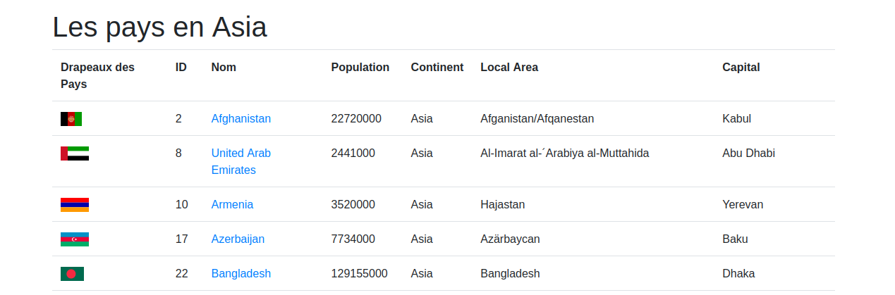

Réalisé en première année de BTS SIO SLAM - 2023-2024
GeoWorld est une application web permettant d'afficher et de consulter des informations géopolitiques et économiques des pays du monde entier. Les données sont stockées dans une base de données SQL et proviennent de l'Institut Official Statistics of Finland (2006).
L'application permet de visualiser les pays par continent, d'afficher leurs capitales, drapeaux et diverses informations géopolitiques.
J'ai commencé par implémenter la fonction getCountriesByContinent qui récupère toutes les informations
concernant les pays depuis la base de données SQL.
Pour afficher ces informations sur le site, j'ai utilisé une boucle foreach avec une condition if/else pour traiter les données de chaque pays par continent.
// Extrait de code pour l'affichage des pays
foreach ($countries as $country) {
// Affichage des informations pour chaque pays
echo "<tr>";
echo "<td>" . $country->name . "</td>";
echo "<td>" . $country->continent . "</td>";
// ... autres colonnes
echo "</tr>";
}
Pour améliorer l'expérience utilisateur, j'ai modifié la structure Dropdown dans le fichier managerdb.php afin de pouvoir sélectionner les pays du continent souhaité.
J'ai créé une fonction getCapital pour récupérer et afficher les capitales de tous les pays
à partir de la base de données.
J'ai également ajouté l'affichage des identifiants pour chaque continent.
Pour finaliser le projet, j'ai ajouté les drapeaux de chaque pays en utilisant les images disponibles dans le dossier du projet.
Le projet GeoWorld s'appuie sur une base de données relationnelle comportant plusieurs tables interconnectées:
<div class="dropdown-menu" aria-labelledby="dropdown01">
<?php $continent = getContinent(); ?>
<?php foreach ($continent as $lecontinent) : ?>
<a class="dropdown-item" href= "index2.php?continent=<?php echo $lecontinent->Continent ?>">
<?php echo $lecontinent->Continent ?>
</a>
<?php endforeach; ?>
</div>
<?php
// $desPays est un tableau dont les éléments sont des objets représentant
// des caractéristiques d'un pays (en relation avec les colonnes de la table Country)
foreach ($desPays as $pays) : ?>
<tr>
<td> <img src = "images/drapeau/<?php echo strtolower($pays-> Code2 )?>.png"> </td>
<td> <?php echo $pays->id ?></td>
<td> <a href= "formulaire_pays.php?="><?php echo $pays->Name;?></a> </td>
<td> <?php echo $pays->Population ?></td>
<td> <?php echo $pays->Continent ?></td>
<td> <?php echo $pays->LocalName ?></td>
<td> <?php if (!empty ($pays->Capital)) {echo getCapital($pays->Capital);} else {echo "NUL";} ?></td>
</tr>
<?php endforeach ; ?>
<?php
if (isset($_GET['continent'])){
$continent = $_GET['continent'];
$desPays = getCountriesByContinent($continent);
}
else {
$continent = "Tous les continents";
$desPays = getAllCountries($continent);
}
?>
Ce projet m'a permis de comprendre les bases du développement web côté serveur et la manipulation de données.